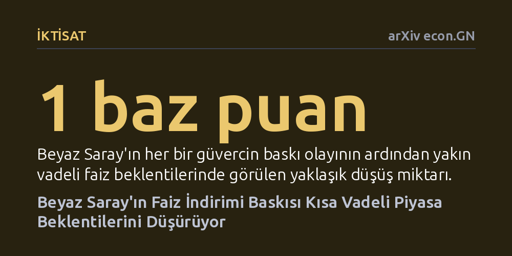

IKTISAT · arXiv econ.GN · 2026-10-27
Araştırmacılar, 1988-2025 yılları arasında ABD yönetimlerinin Fed üzerindeki siyasi baskılarının piyasa faiz beklentilerini nasıl etkilediğini inceledi. Faiz indirimi yönündeki güvercin baskıların kısa vadeli faiz beklentilerini düşürdüğü, faiz artışı yönündeki şahin baskıların ise piyasada anlamlı bir etki yaratmadığı saptandı.
Siyasi iktidarların merkez bankasına yönelik faiz baskılarının piyasalarca görmezden gelinmediğini, aksine yakın vadeli para politikasında gevşeme sinyali olarak fiyatlandığını gösterir.

Merkez bankalarının bağımsızlığı, çağdaş iktisat kuramının ve fiyat istikrarının temel taşlarından biri kabul edilir. Amerika Birleşik Devletleri'nde Federal Rezerv (Fed) yasal olarak bağımsız bir kurum olsa da siyasi iktidarlar dönemsel olarak faiz kararlarına sözlü müdahalelerde bulunmaktan geri durmamıştır. Özellikle seçim dönemlerinde veya ekonomik yavaşlama süreçlerinde başkanların Fed'i açıkça hedef alıp faiz indirimine zorlaması, kamuoyunda sıkça tartışılan bir olgudur. Ancak finansal piyasaların bu sözlü baskıları sadece boş bir siyasi retorik olarak mı gördüğü yoksa gelecekteki para politikasına dair somut bir sinyal olarak mı fiyatladığı bugüne kadar sistematik biçimde ortaya konmamıştı.
Bu sorunun yanıtı yalnızca akademi için değil, merkez bankasının kurumsal güvenilirliği ve piyasa istikrarı açısından da kritik bir önem taşır. Eğer piyasalar siyasetçilerin faiz çıkışlarına tepki veriyorsa, bu durum Fed'in fiili bağımsızlığının ve karar alma sürecinin siyasi baskılar altında aşındığı algısını güçlendirebilir. Tersine, piyasaların bu söylemleri tamamen göz ardı etmesi durumunda siyasi söylemin para politikası aktarımı üzerinde hiçbir ağırlığının olmadığı sonucuna varılabilir.
Araştırmacılar bu soruyu yanıtlamak amacıyla 1988'den 2025'e kadar uzanan yaklaşık kırk yıllık devasa bir haber akışını mercek altına aldı. Bu kapsamda Reuters haber ajansının tüm bültenleri tarandı ve ABD başkanlık yönetimlerinin Fed'e yönelik sözlü baskılarını içeren ifadeler ayıklandı. Metinlerin analizinde ve baskının yönünün belirlenmesinde, açık ağırlıklı büyük dil modellerinden oluşan bir yapay zeka topluluğu kullanıldı. Yapay zeka sistemi, her bir haberi faizlerin indirilmesini talep eden güvercin baskı ya da faizlerin artırılmasını veya sıkı tutulmasını isteyen şahin baskı olarak sınıflandırdı.
Elde edilen bu baskı olaylarının ardından finansal piyasalardaki anlık ve günlük tepkiler ekonometrik yöntemlerle incelendi. Araştırmacılar yalnızca genel faiz beklentilerini değil; farklı vadelerdeki faiz eğrisini, ABD dolarının değerini, piyasalarda fiyatlanan enflasyon telafisini ve piyasa oynaklığını takip etti. Ayrıca bulguların yalnızca belirli bir döneme veya alışılmadık üslubuyla öne çıkan Donald Trump başkanlığına özgü olup olmadığını denetlemek için Trump dönemleri veri setinden çıkarılarak ek duyarlılık testleri yürütüldü.
Elde edilen bulgular, piyasaların siyasi baskılara bütünüyle duyarsız kalmadığını ancak son derece seçici davrandığını gösterdi. Beyaz Saray'dan gelen her bir güvercin baskı olayı, piyasalardaki yakın vadeli faiz beklentisini yaklaşık 1 baz puan düşürüyor. Bu düşüş, bir sonraki Federal Açık Piyasa Komitesi (FOMC) toplantısında faiz indirimi yapılacağına dair piyasada ima edilen olasılıkta yaklaşık yüzde 4'lük bir artışa karşılık geliyor. Ancak bu etki kalıcı değil; zaman içinde düzenli olarak azalarak üç aylık vade sınırının ötesinde tamamen kayboluyor.
Buna karşılık, faizlerin artırılması yönündeki şahin baskıların piyasalar üzerinde tespit edilebilir hiçbir etkisi bulunamadı. Yani piyasa aktörleri, yönetimin faizlerin artırılması taleplerine kulak asmazken, faiz indirimi taleplerini ciddiye alıyor. Analizden Trump başkanlığı dönemleri çıkarıldığında dahi katsayıların gücünü koruduğu görüldü. Bu durum, sonucun yalnızca yakın geçmişteki münferit bir siyasi döneme hapsolmadığını, kırk yıllık tarihsel eğilimin genel bir parçası olduğunu gösteriyor. Eş zamanlı olarak güvercin baskılar sırasında ABD dolarında değer kaybı yaşanırken, enflasyon beklentilerinde ve piyasa oynaklığında anlamlı bir bozulma gözlenmedi.
İktisat yazınında siyasi baskıların piyasalarca fiyatlanmasına dair iki temel kuramsal açıklama öne sürülebilir. İlk yaklaşıma göre piyasalar, siyasi baskıyı merkez bankasının çıpasının kırıldığı ve kurumsal güvenilirliğin zedelendiği bir tehlike olarak yorumlayarak risk primi talep edebilir. Ancak araştırma verileri bu hipotezi desteklemiyor; zira enflasyon telafisinde sıçrama ya da piyasa oynaklığında artış yaşanmıyor. Araştırmacılar tablonun, piyasaların Fed'in gelecekte gerçekten parasal gevşemeye gideceğini öngörerek pozisyon almasından kaynaklandığını ifade ediyor.
Sonuç olarak çalışma, merkez bankası bağımsızlığının yasal olarak tanımlandığı durumlarda dahi, siyasi iktidarın sözlü yönlendirmelerinin piyasa beklentilerini şekillendirebildiğini ortaya koyuyor. Bununla birlikte piyasaların bu baskıyı bir rejim çöküşü veya kurumsal güvenilirlik krizi olarak değil, yaklaşan faiz indirimlerinin erken bir habercisi olarak fiyatlaması, piyasa aktörlerinin siyaset ile para politikası arasındaki örtük etkileşimi rasyonel ve pragmatik bir yaklaşımla okuduğunu gösteriyor.